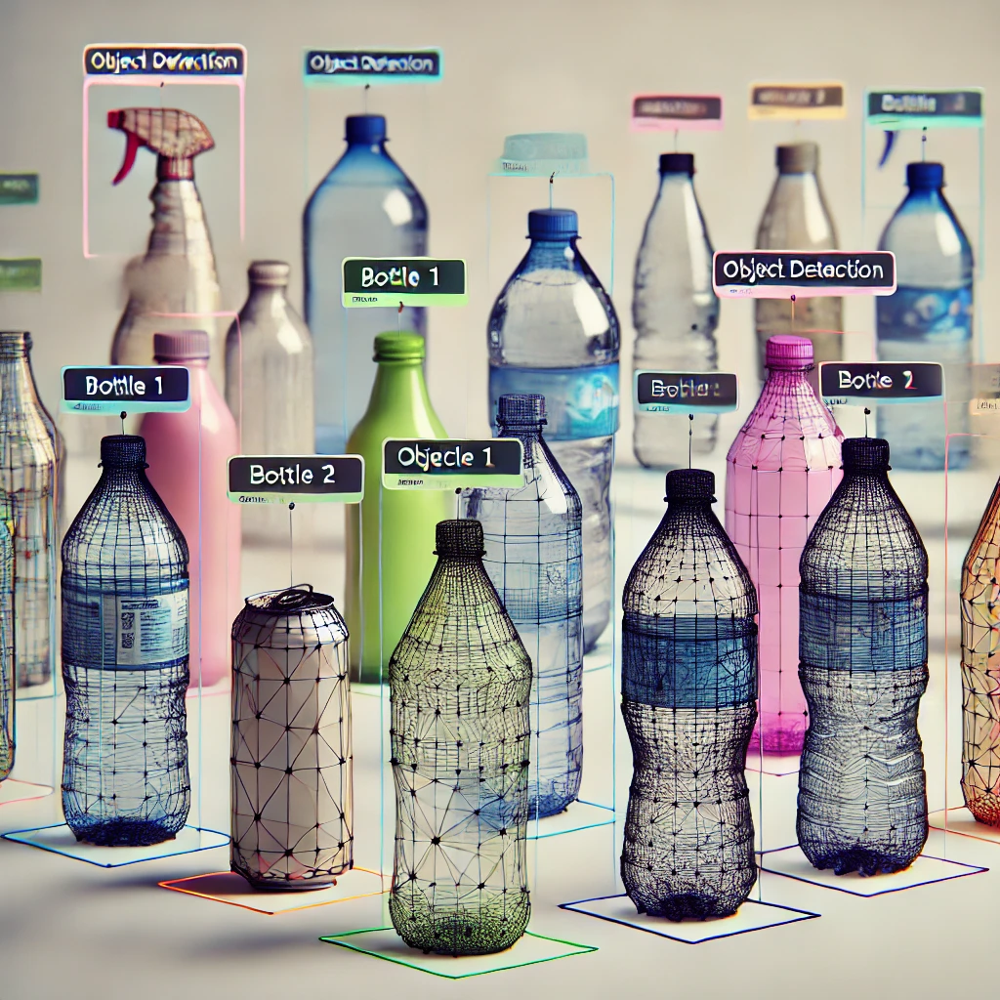

Hello, I'm
Bharadwaj Dhornala
Data Enthusiast


Hello, I'm
Data Enthusiast
Get To Know More
I am an enthusiastic and dedicated data professional passionate about leveraging technology to derive actionable insights from complex data sets. With over three years of hands-on experience in data science and analytics, I have honed my skills in Python, SQL, and cloud computing platforms such as AWS. My academic journey, culminating in a Master's degree in Computer Science at the University of North Carolina at Charlotte, has equipped me with a strong foundation in computational problem-solving and advanced analytics techniques.
My professional experience includes roles as a Data Science Analyst and Research Analyst, where I utilized skills like Python, SQL and tools like Apache Spark, Hadoop, and Snowflake to design scalable data solutions. I have also developed AI-driven models, implemented end-to-end data pipelines, and created interactive dashboards using tools like Tableau and Power BI, which significantly improved decision-making processes for stakeholders.
Apart from my professional experience, I have worked on innovative projects like LinkedInsight, Pixel2Speech and many more. These projects reflect my ability to merge technical skills with creativity to solve real-world problems effectively.
Beyond work, I am intrigued by emerging technologies like Generative AI and Big Data frameworks, always seeking to expand my knowledge and apply it meaningfully. I am actively seeking opportunities to contribute my expertise to organizations focused on data-driven innovation. I aspire to work in a challenging environment that fosters growth and encourages creative solutions to drive impactful results.
My Academic Journey
August 2023 - May 2024
June 2016 - July 2020
Explore My
August 2020 - August 2023
January 2020 - August 2020
September 2019 - December 2019
Browse My Recent
Developed a LinkedIn profile screening application leveraging Python, Streamlit, and OpenAI's LLM API to assist recruiters in evaluating candidates. The tool parses LinkedIn profiles from URLs to generate concise word summaries, highlights key skills, and provides a Q&A feature for recruiters to ask follow-up questions about candidates. Designed a friendly UI with input and output fields for seamless interaction.
Designed an image-to-speech pipeline utilizing pre-trained models and LSTM, achieving 25% improved speech synthesis quality. Integrated computer vision to interpret image content and text-to-speech for conversion. Demonstrated expertise in deep learning, multimedia processing, and seamless integration of vision and speech technologies to enable accurate and efficient multimedia conversion.

Built an object detection system using YOLO with TensorFlow to identify bottles of varying styles, sizes, and shapes. Prepared and annotated custom datasets, fine-tuned the model, and used data augmentation for enhanced performance. Demonstrated proficiency in deep learning, computer vision, and model evaluation, with applications in inventory and product identification systems.
Get in Touch